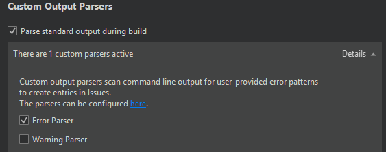

Activate custom output parsers
You can activate custom output parsers in the Custom Output Parsers section of the Build and Run settings, as well as in the custom compiler settings.
To activate a custom output parser in the Build or Run settings of a project:
- In the Custom Output Parsers section, select Details.

- Select custom parsers to activate them for building or running the project.
Select Parse standard output during build to make output parsers look for diagnostics on stdout in addition to stderr.
See also Add custom compilers, Add custom output parsers, Configure projects for building, and Configure projects for running.